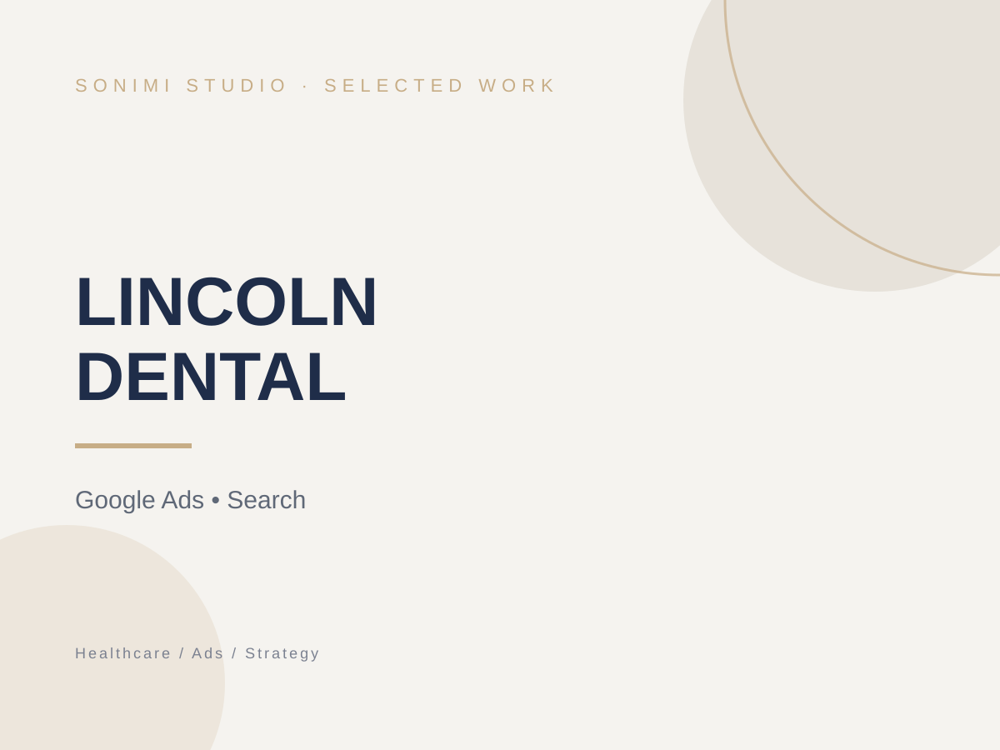

HEALTHCARE
Lincoln Dental
Google Ads management and digital visibility work focused on local patient acquisition, search performance and opportunities to strengthen the wider online presence.

THE CHALLENGE
Improving local visibility in a competitive dental market
Lincoln Dental wanted to strengthen local patient acquisition and better understand how paid search, website content, reviews and SEO could work together across its clinic locations.
THE APPROACH
Paid search supported by a wider visibility strategy
The work began with Google Ads setup and optimisation around high-intent local searches, supported by keyword refinement and conversion-focused campaign decisions. Alongside advertising, the broader review considers website improvements, local SEO, reviews and search visibility.
- Google Ads setup and ongoing optimisation
- High-intent local keyword strategy
- Negative keyword refinement
- Website and competitor review
- SEO, reviews and local visibility planning
THE DIRECTION
A more measurable approach to local acquisition
The work creates a clearer framework for managing paid search while identifying the website, SEO and reputation improvements that can strengthen long-term local visibility.
Need a clearer digital presence for your business?
Let’s look at what your business actually needs and build from there.
Start a Conversation